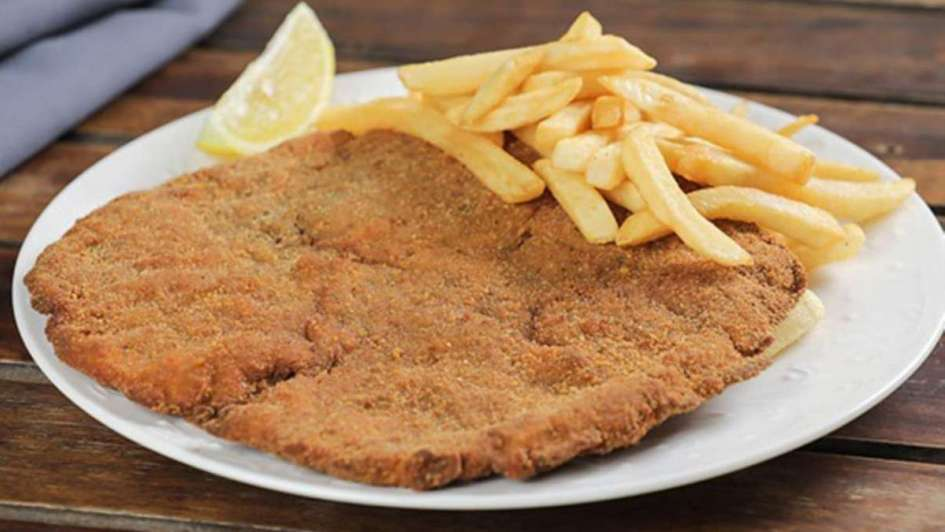

Milanesas de carne

Historia de la receta
El origen de la milanesa o milanga tiene muchas versiones.
La más aceptada dice que viene de la ciudad italiana de Milán, en donde se la conoce como cotoletta. Cuentan que en el año 1134, cuando Milán era parte del imperio austro-húngaro, un cocinero italiano presentó en la Corte ese plato por primera vez.
Con la llegada de los inmigrantes a la Argentina, la cotoletta alla milanese se transformó en la milanesa que todos conocemos.
¡Pero hay más! Ya en la década de 1950 se empezó a hacer popular la milanesa a la napolitana
Su creación fue resultado de un accidente en la década de 1950. Dicen que a don José Nápoli, dueño de un bodegón que estaba frente al estadio Luna Park en Buenos Aires, se le ocurrió 'tapar' una milanesa que se había quemado mucho en la freidora.
ingredientes
- 8 milanesas pequeñas (yo las hice de cuadrada, pero puede ser lomo, bola de lomo, peceto, etc.)
- Pan rallado
Para el marinado
- 2 huevos
- 1 cda. de mostaza
- Jugo y ralladura de 1 limón
- 1 diente de ajo
- Perejil picado
- 1 cda. de queso rallado
- Sal y pimienta
Preparacion
- Lo primero que vamos a hacer es batir los huevos y agregar dentro todos los ingredientes de la marinada. Vamos a mezclar todo bien.
- Siguiente: Vamos a salar las milanesas y colocarlas dentro de la marinada, tienen que quedar bien embebidas. Las vamos a tapar con papel film y las vamos a llevar a la heladera mínimo por una hora. Cuanto más, mejor.
- Pasado ese tiempo, vamos a sacarlas de la heladera. Luego, milanesa por milanesa,, vamos a empanarlas con el pan rallado, presionando de ambos lados hasta que las recubra bien.
- Finalmente, lo que queda es freírlas en aceite bien caliente hasta que estén doradas y disfrutarlas mucho.
otras recetas